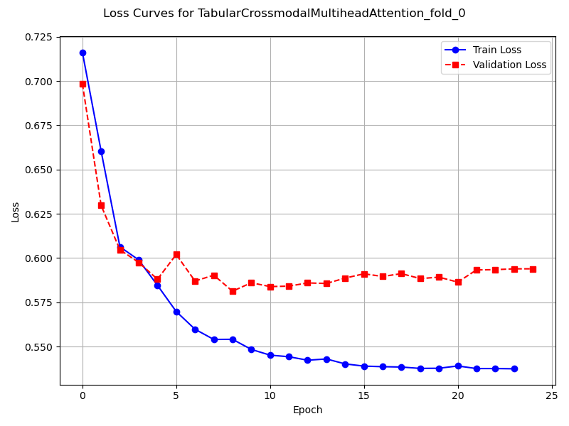
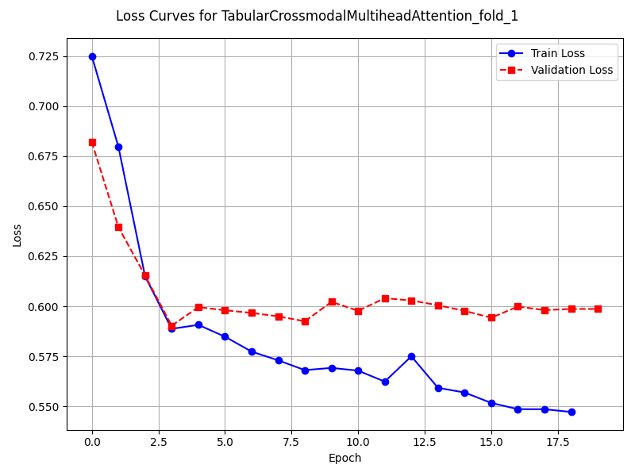

Note
Go to the end to download the full example code
Binary: training one kfold model
This script shows how to train one fusion models on a binary task with k-fold training protocol and multimodal tabular data.
Key Features:
Importing a model based on its path.
Training and testing a model with k-fold cross validation.
Plotting the results of a single k-fold model.
import matplotlib.pyplot as plt
from tqdm.auto import tqdm
from docs.examples import generate_sklearn_simulated_data
from fusionlibrary.datamodules import get_data_module
from fusionlibrary.eval_functions import Plotter
from fusionlibrary.fusion_models.base_pl_model import BaseModel
1. Import model
from fusionlibrary.fusion_models.tab_crossmodal_att import (
TabularCrossmodalMultiheadAttention,
)
from fusionlibrary.train_functions import train_and_save_models
2. Set the training parameters
params = {
"test_size": 0.2,
"kfold_flag": True,
"num_k": 5,
"log": False,
"pred_type": "binary",
"batch_size": 32,
}
3. Generate simulated data
params = generate_sklearn_simulated_data(
num_samples=500,
num_tab1_features=10,
num_tab2_features=10,
img_dims=(1, 100, 100),
params=params,
)
Initialise model
fusion_model = TabularCrossmodalMultiheadAttention
single_model_dict = {}
print("method_name:", fusion_model.method_name)
print("modality_type:", fusion_model.modality_type)
print("fusion_type:", fusion_model.fusion_type)
method_name: Tabular Crossmodal multi-head attention
modality_type: both_tab
fusion_type: attention
5. Train and test the model
dm = get_data_module(
fusion_model=fusion_model, params=params, batch_size=params["batch_size"]
)
# train and test
single_model_dict = train_and_save_models(
trained_models_dict=single_model_dict,
data_module=dm,
params=params,
fusion_model=fusion_model,
)
Training: 0it [00:00, ?it/s]
Training: 0%| | 0/17 [00:00<?, ?it/s]
Epoch 0: 0%| | 0/17 [00:00<?, ?it/s]
Epoch 0: 6%|▌ | 1/17 [00:00<00:00, 18.05it/s]
Epoch 0: 6%|▌ | 1/17 [00:00<00:00, 17.94it/s, loss=0.769]
Epoch 0: 12%|█▏ | 2/17 [00:00<00:00, 32.19it/s, loss=0.769]
Epoch 0: 12%|█▏ | 2/17 [00:00<00:00, 32.07it/s, loss=0.715]
Epoch 0: 18%|█▊ | 3/17 [00:00<00:00, 43.19it/s, loss=0.715]
Epoch 0: 18%|█▊ | 3/17 [00:00<00:00, 43.08it/s, loss=0.722]
Epoch 0: 24%|██▎ | 4/17 [00:00<00:00, 52.66it/s, loss=0.722]
Epoch 0: 24%|██▎ | 4/17 [00:00<00:00, 52.52it/s, loss=0.715]
Epoch 0: 29%|██▉ | 5/17 [00:00<00:00, 60.62it/s, loss=0.715]
Epoch 0: 29%|██▉ | 5/17 [00:00<00:00, 60.49it/s, loss=0.704]
Epoch 0: 35%|███▌ | 6/17 [00:00<00:00, 66.92it/s, loss=0.704]
Epoch 0: 35%|███▌ | 6/17 [00:00<00:00, 66.78it/s, loss=0.697]
Epoch 0: 41%|████ | 7/17 [00:00<00:00, 73.06it/s, loss=0.697]
Epoch 0: 41%|████ | 7/17 [00:00<00:00, 72.91it/s, loss=0.698]
Epoch 0: 47%|████▋ | 8/17 [00:00<00:00, 78.31it/s, loss=0.698]
Epoch 0: 47%|████▋ | 8/17 [00:00<00:00, 78.17it/s, loss=0.702]
Epoch 0: 53%|█████▎ | 9/17 [00:00<00:00, 82.89it/s, loss=0.702]
Epoch 0: 53%|█████▎ | 9/17 [00:00<00:00, 82.75it/s, loss=0.705]
Epoch 0: 59%|█████▉ | 10/17 [00:00<00:00, 87.44it/s, loss=0.705]
Epoch 0: 59%|█████▉ | 10/17 [00:00<00:00, 87.30it/s, loss=0.71]
Epoch 0: 65%|██████▍ | 11/17 [00:00<00:00, 90.95it/s, loss=0.71]
Epoch 0: 65%|██████▍ | 11/17 [00:00<00:00, 90.80it/s, loss=0.71]
Epoch 0: 71%|███████ | 12/17 [00:00<00:00, 94.39it/s, loss=0.71]
Epoch 0: 71%|███████ | 12/17 [00:00<00:00, 94.26it/s, loss=0.714]
Epoch 0: 76%|███████▋ | 13/17 [00:00<00:00, 97.56it/s, loss=0.714]
Epoch 0: 76%|███████▋ | 13/17 [00:00<00:00, 97.44it/s, loss=0.713]
Epoch 0: 82%|████████▏ | 14/17 [00:00<00:00, 102.89it/s, loss=0.713]
Epoch 0: 88%|████████▊ | 15/17 [00:00<00:00, 109.17it/s, loss=0.713]
Epoch 0: 94%|█████████▍| 16/17 [00:00<00:00, 115.43it/s, loss=0.713]
Epoch 0: 100%|██████████| 17/17 [00:00<00:00, 121.80it/s, loss=0.713]
Epoch 0: 100%|██████████| 17/17 [00:00<00:00, 120.24it/s, loss=0.713, val_loss=0.697]
Epoch 0: 100%|██████████| 17/17 [00:00<00:00, 118.44it/s, loss=0.713, val_loss=0.697, train_loss=0.713]
Epoch 0: 0%| | 0/17 [00:00<?, ?it/s, loss=0.713, val_loss=0.697, train_loss=0.713]
Epoch 1: 0%| | 0/17 [00:00<?, ?it/s, loss=0.713, val_loss=0.697, train_loss=0.713]
Epoch 1: 6%|▌ | 1/17 [00:00<00:00, 167.64it/s, loss=0.713, val_loss=0.697, train_loss=0.713]
Epoch 1: 6%|▌ | 1/17 [00:00<00:00, 162.53it/s, loss=0.713, val_loss=0.697, train_loss=0.713]
Epoch 1: 12%|█▏ | 2/17 [00:00<00:00, 161.90it/s, loss=0.713, val_loss=0.697, train_loss=0.713]
Epoch 1: 12%|█▏ | 2/17 [00:00<00:00, 159.16it/s, loss=0.709, val_loss=0.697, train_loss=0.713]
Epoch 1: 18%|█▊ | 3/17 [00:00<00:00, 163.52it/s, loss=0.709, val_loss=0.697, train_loss=0.713]
Epoch 1: 18%|█▊ | 3/17 [00:00<00:00, 161.82it/s, loss=0.709, val_loss=0.697, train_loss=0.713]
Epoch 1: 24%|██▎ | 4/17 [00:00<00:00, 162.71it/s, loss=0.709, val_loss=0.697, train_loss=0.713]
Epoch 1: 24%|██▎ | 4/17 [00:00<00:00, 161.47it/s, loss=0.709, val_loss=0.697, train_loss=0.713]
Epoch 1: 29%|██▉ | 5/17 [00:00<00:00, 161.64it/s, loss=0.709, val_loss=0.697, train_loss=0.713]
Epoch 1: 29%|██▉ | 5/17 [00:00<00:00, 160.60it/s, loss=0.709, val_loss=0.697, train_loss=0.713]
Epoch 1: 35%|███▌ | 6/17 [00:00<00:00, 163.49it/s, loss=0.709, val_loss=0.697, train_loss=0.713]
Epoch 1: 35%|███▌ | 6/17 [00:00<00:00, 162.75it/s, loss=0.707, val_loss=0.697, train_loss=0.713]
Epoch 1: 41%|████ | 7/17 [00:00<00:00, 163.57it/s, loss=0.707, val_loss=0.697, train_loss=0.713]
Epoch 1: 41%|████ | 7/17 [00:00<00:00, 162.87it/s, loss=0.706, val_loss=0.697, train_loss=0.713]
Epoch 1: 47%|████▋ | 8/17 [00:00<00:00, 164.28it/s, loss=0.706, val_loss=0.697, train_loss=0.713]
Epoch 1: 47%|████▋ | 8/17 [00:00<00:00, 163.69it/s, loss=0.702, val_loss=0.697, train_loss=0.713]
Epoch 1: 53%|█████▎ | 9/17 [00:00<00:00, 165.75it/s, loss=0.702, val_loss=0.697, train_loss=0.713]
Epoch 1: 53%|█████▎ | 9/17 [00:00<00:00, 165.29it/s, loss=0.703, val_loss=0.697, train_loss=0.713]
Epoch 1: 59%|█████▉ | 10/17 [00:00<00:00, 166.22it/s, loss=0.703, val_loss=0.697, train_loss=0.713]
Epoch 1: 59%|█████▉ | 10/17 [00:00<00:00, 165.75it/s, loss=0.701, val_loss=0.697, train_loss=0.713]
Epoch 1: 65%|██████▍ | 11/17 [00:00<00:00, 167.42it/s, loss=0.701, val_loss=0.697, train_loss=0.713]
Epoch 1: 65%|██████▍ | 11/17 [00:00<00:00, 166.98it/s, loss=0.701, val_loss=0.697, train_loss=0.713]
Epoch 1: 71%|███████ | 12/17 [00:00<00:00, 166.83it/s, loss=0.701, val_loss=0.697, train_loss=0.713]
Epoch 1: 71%|███████ | 12/17 [00:00<00:00, 166.43it/s, loss=0.702, val_loss=0.697, train_loss=0.713]
Epoch 1: 76%|███████▋ | 13/17 [00:00<00:00, 168.11it/s, loss=0.702, val_loss=0.697, train_loss=0.713]
Epoch 1: 76%|███████▋ | 13/17 [00:00<00:00, 167.78it/s, loss=0.704, val_loss=0.697, train_loss=0.713]
Epoch 1: 82%|████████▏ | 14/17 [00:00<00:00, 175.15it/s, loss=0.704, val_loss=0.697, train_loss=0.713]
Epoch 1: 88%|████████▊ | 15/17 [00:00<00:00, 184.97it/s, loss=0.704, val_loss=0.697, train_loss=0.713]
Epoch 1: 94%|█████████▍| 16/17 [00:00<00:00, 194.61it/s, loss=0.704, val_loss=0.697, train_loss=0.713]
Epoch 1: 100%|██████████| 17/17 [00:00<00:00, 204.59it/s, loss=0.704, val_loss=0.697, train_loss=0.713]
Epoch 1: 100%|██████████| 17/17 [00:00<00:00, 201.93it/s, loss=0.704, val_loss=0.685, train_loss=0.713]
Epoch 1: 100%|██████████| 17/17 [00:00<00:00, 200.93it/s, loss=0.704, val_loss=0.685, train_loss=0.691]
Epoch 1: 0%| | 0/17 [00:00<?, ?it/s, loss=0.704, val_loss=0.685, train_loss=0.691]
Epoch 2: 0%| | 0/17 [00:00<?, ?it/s, loss=0.704, val_loss=0.685, train_loss=0.691]
Epoch 2: 6%|▌ | 1/17 [00:00<00:00, 146.74it/s, loss=0.704, val_loss=0.685, train_loss=0.691]
Epoch 2: 6%|▌ | 1/17 [00:00<00:00, 142.92it/s, loss=0.703, val_loss=0.685, train_loss=0.691]
Epoch 2: 12%|█▏ | 2/17 [00:00<00:00, 150.82it/s, loss=0.703, val_loss=0.685, train_loss=0.691]
Epoch 2: 12%|█▏ | 2/17 [00:00<00:00, 148.88it/s, loss=0.701, val_loss=0.685, train_loss=0.691]
Epoch 2: 18%|█▊ | 3/17 [00:00<00:00, 152.63it/s, loss=0.701, val_loss=0.685, train_loss=0.691]
Epoch 2: 18%|█▊ | 3/17 [00:00<00:00, 151.25it/s, loss=0.699, val_loss=0.685, train_loss=0.691]
Epoch 2: 24%|██▎ | 4/17 [00:00<00:00, 158.25it/s, loss=0.699, val_loss=0.685, train_loss=0.691]
Epoch 2: 24%|██▎ | 4/17 [00:00<00:00, 157.03it/s, loss=0.695, val_loss=0.685, train_loss=0.691]
Epoch 2: 29%|██▉ | 5/17 [00:00<00:00, 159.28it/s, loss=0.695, val_loss=0.685, train_loss=0.691]
Epoch 2: 29%|██▉ | 5/17 [00:00<00:00, 158.29it/s, loss=0.693, val_loss=0.685, train_loss=0.691]
Epoch 2: 35%|███▌ | 6/17 [00:00<00:00, 159.23it/s, loss=0.693, val_loss=0.685, train_loss=0.691]
Epoch 2: 35%|███▌ | 6/17 [00:00<00:00, 158.46it/s, loss=0.689, val_loss=0.685, train_loss=0.691]
Epoch 2: 41%|████ | 7/17 [00:00<00:00, 160.42it/s, loss=0.689, val_loss=0.685, train_loss=0.691]
Epoch 2: 41%|████ | 7/17 [00:00<00:00, 159.84it/s, loss=0.688, val_loss=0.685, train_loss=0.691]
Epoch 2: 47%|████▋ | 8/17 [00:00<00:00, 162.96it/s, loss=0.688, val_loss=0.685, train_loss=0.691]
Epoch 2: 47%|████▋ | 8/17 [00:00<00:00, 162.38it/s, loss=0.685, val_loss=0.685, train_loss=0.691]
Epoch 2: 53%|█████▎ | 9/17 [00:00<00:00, 163.76it/s, loss=0.685, val_loss=0.685, train_loss=0.691]
Epoch 2: 53%|█████▎ | 9/17 [00:00<00:00, 163.25it/s, loss=0.686, val_loss=0.685, train_loss=0.691]
Epoch 2: 59%|█████▉ | 10/17 [00:00<00:00, 163.49it/s, loss=0.686, val_loss=0.685, train_loss=0.691]
Epoch 2: 59%|█████▉ | 10/17 [00:00<00:00, 162.98it/s, loss=0.685, val_loss=0.685, train_loss=0.691]
Epoch 2: 65%|██████▍ | 11/17 [00:00<00:00, 163.49it/s, loss=0.685, val_loss=0.685, train_loss=0.691]
Epoch 2: 65%|██████▍ | 11/17 [00:00<00:00, 163.07it/s, loss=0.682, val_loss=0.685, train_loss=0.691]
Epoch 2: 71%|███████ | 12/17 [00:00<00:00, 163.62it/s, loss=0.682, val_loss=0.685, train_loss=0.691]
Epoch 2: 71%|███████ | 12/17 [00:00<00:00, 163.20it/s, loss=0.679, val_loss=0.685, train_loss=0.691]
Epoch 2: 76%|███████▋ | 13/17 [00:00<00:00, 164.05it/s, loss=0.679, val_loss=0.685, train_loss=0.691]
Epoch 2: 76%|███████▋ | 13/17 [00:00<00:00, 163.70it/s, loss=0.681, val_loss=0.685, train_loss=0.691]
Epoch 2: 82%|████████▏ | 14/17 [00:00<00:00, 171.05it/s, loss=0.681, val_loss=0.685, train_loss=0.691]
Epoch 2: 88%|████████▊ | 15/17 [00:00<00:00, 180.76it/s, loss=0.681, val_loss=0.685, train_loss=0.691]
Epoch 2: 94%|█████████▍| 16/17 [00:00<00:00, 190.30it/s, loss=0.681, val_loss=0.685, train_loss=0.691]
Epoch 2: 100%|██████████| 17/17 [00:00<00:00, 200.16it/s, loss=0.681, val_loss=0.685, train_loss=0.691]
Epoch 2: 100%|██████████| 17/17 [00:00<00:00, 197.63it/s, loss=0.681, val_loss=0.658, train_loss=0.691]
Epoch 2: 100%|██████████| 17/17 [00:00<00:00, 196.75it/s, loss=0.681, val_loss=0.658, train_loss=0.675]
Epoch 2: 100%|██████████| 17/17 [00:00<00:00, 185.02it/s, loss=0.681, val_loss=0.658, train_loss=0.675]
────────────────────────────────────────────────────────────────────────────────────────────────────────────────────────────────────────────────────────────────────────
Validate metric DataLoader 0
────────────────────────────────────────────────────────────────────────────────────────────────────────────────────────────────────────────────────────────────────────
binary_accuracy_val 0.49000000953674316
binary_auroc_val 0.8143256902694702
val_loss 0.6584568023681641
────────────────────────────────────────────────────────────────────────────────────────────────────────────────────────────────────────────────────────────────────────
Training: 0it [00:00, ?it/s]
Training: 0%| | 0/17 [00:00<?, ?it/s]
Epoch 0: 0%| | 0/17 [00:00<?, ?it/s]
Epoch 0: 6%|▌ | 1/17 [00:00<00:00, 138.74it/s]
Epoch 0: 6%|▌ | 1/17 [00:00<00:00, 135.05it/s, loss=0.662]
Epoch 0: 12%|█▏ | 2/17 [00:00<00:00, 145.42it/s, loss=0.662]
Epoch 0: 12%|█▏ | 2/17 [00:00<00:00, 143.21it/s, loss=0.707]
Epoch 0: 18%|█▊ | 3/17 [00:00<00:00, 152.84it/s, loss=0.707]
Epoch 0: 18%|█▊ | 3/17 [00:00<00:00, 151.35it/s, loss=0.727]
Epoch 0: 24%|██▎ | 4/17 [00:00<00:00, 153.81it/s, loss=0.727]
Epoch 0: 24%|██▎ | 4/17 [00:00<00:00, 152.73it/s, loss=0.721]
Epoch 0: 29%|██▉ | 5/17 [00:00<00:00, 157.26it/s, loss=0.721]
Epoch 0: 29%|██▉ | 5/17 [00:00<00:00, 156.40it/s, loss=0.724]
Epoch 0: 35%|███▌ | 6/17 [00:00<00:00, 159.37it/s, loss=0.724]
Epoch 0: 35%|███▌ | 6/17 [00:00<00:00, 158.59it/s, loss=0.734]
Epoch 0: 41%|████ | 7/17 [00:00<00:00, 159.94it/s, loss=0.734]
Epoch 0: 41%|████ | 7/17 [00:00<00:00, 159.35it/s, loss=0.734]
Epoch 0: 47%|████▋ | 8/17 [00:00<00:00, 160.14it/s, loss=0.734]
Epoch 0: 47%|████▋ | 8/17 [00:00<00:00, 159.50it/s, loss=0.733]
Epoch 0: 53%|█████▎ | 9/17 [00:00<00:00, 158.06it/s, loss=0.733]
Epoch 0: 53%|█████▎ | 9/17 [00:00<00:00, 157.52it/s, loss=0.719]
Epoch 0: 59%|█████▉ | 10/17 [00:00<00:00, 158.53it/s, loss=0.719]
Epoch 0: 59%|█████▉ | 10/17 [00:00<00:00, 158.00it/s, loss=0.719]
Epoch 0: 65%|██████▍ | 11/17 [00:00<00:00, 158.39it/s, loss=0.719]
Epoch 0: 65%|██████▍ | 11/17 [00:00<00:00, 157.96it/s, loss=0.712]
Epoch 0: 71%|███████ | 12/17 [00:00<00:00, 157.85it/s, loss=0.712]
Epoch 0: 71%|███████ | 12/17 [00:00<00:00, 157.46it/s, loss=0.711]
Epoch 0: 76%|███████▋ | 13/17 [00:00<00:00, 158.26it/s, loss=0.711]
Epoch 0: 76%|███████▋ | 13/17 [00:00<00:00, 157.93it/s, loss=0.716]
Epoch 0: 82%|████████▏ | 14/17 [00:00<00:00, 165.52it/s, loss=0.716]
Epoch 0: 88%|████████▊ | 15/17 [00:00<00:00, 174.07it/s, loss=0.716]
Epoch 0: 94%|█████████▍| 16/17 [00:00<00:00, 182.69it/s, loss=0.716]
Epoch 0: 100%|██████████| 17/17 [00:00<00:00, 191.05it/s, loss=0.716]
Epoch 0: 100%|██████████| 17/17 [00:00<00:00, 187.12it/s, loss=0.716, val_loss=0.701]
Epoch 0: 100%|██████████| 17/17 [00:00<00:00, 186.20it/s, loss=0.716, val_loss=0.701, train_loss=0.713]
Epoch 0: 0%| | 0/17 [00:00<?, ?it/s, loss=0.716, val_loss=0.701, train_loss=0.713]
Epoch 1: 0%| | 0/17 [00:00<?, ?it/s, loss=0.716, val_loss=0.701, train_loss=0.713]
Epoch 1: 6%|▌ | 1/17 [00:00<00:00, 162.82it/s, loss=0.716, val_loss=0.701, train_loss=0.713]
Epoch 1: 6%|▌ | 1/17 [00:00<00:00, 158.18it/s, loss=0.717, val_loss=0.701, train_loss=0.713]
Epoch 1: 12%|█▏ | 2/17 [00:00<00:00, 167.31it/s, loss=0.717, val_loss=0.701, train_loss=0.713]
Epoch 1: 12%|█▏ | 2/17 [00:00<00:00, 164.23it/s, loss=0.714, val_loss=0.701, train_loss=0.713]
Epoch 1: 18%|█▊ | 3/17 [00:00<00:00, 167.85it/s, loss=0.714, val_loss=0.701, train_loss=0.713]
Epoch 1: 18%|█▊ | 3/17 [00:00<00:00, 166.22it/s, loss=0.715, val_loss=0.701, train_loss=0.713]
Epoch 1: 24%|██▎ | 4/17 [00:00<00:00, 167.41it/s, loss=0.715, val_loss=0.701, train_loss=0.713]
Epoch 1: 24%|██▎ | 4/17 [00:00<00:00, 166.05it/s, loss=0.713, val_loss=0.701, train_loss=0.713]
Epoch 1: 29%|██▉ | 5/17 [00:00<00:00, 165.57it/s, loss=0.713, val_loss=0.701, train_loss=0.713]
Epoch 1: 29%|██▉ | 5/17 [00:00<00:00, 164.64it/s, loss=0.711, val_loss=0.701, train_loss=0.713]
Epoch 1: 35%|███▌ | 6/17 [00:00<00:00, 166.49it/s, loss=0.711, val_loss=0.701, train_loss=0.713]
Epoch 1: 35%|███▌ | 6/17 [00:00<00:00, 165.60it/s, loss=0.709, val_loss=0.701, train_loss=0.713]
Epoch 1: 41%|████ | 7/17 [00:00<00:00, 165.73it/s, loss=0.709, val_loss=0.701, train_loss=0.713]
Epoch 1: 41%|████ | 7/17 [00:00<00:00, 165.12it/s, loss=0.709, val_loss=0.701, train_loss=0.713]
Epoch 1: 47%|████▋ | 8/17 [00:00<00:00, 167.21it/s, loss=0.709, val_loss=0.701, train_loss=0.713]
Epoch 1: 47%|████▋ | 8/17 [00:00<00:00, 166.71it/s, loss=0.71, val_loss=0.701, train_loss=0.713]
Epoch 1: 53%|█████▎ | 9/17 [00:00<00:00, 167.69it/s, loss=0.71, val_loss=0.701, train_loss=0.713]
Epoch 1: 53%|█████▎ | 9/17 [00:00<00:00, 167.21it/s, loss=0.707, val_loss=0.701, train_loss=0.713]
Epoch 1: 59%|█████▉ | 10/17 [00:00<00:00, 168.46it/s, loss=0.707, val_loss=0.701, train_loss=0.713]
Epoch 1: 59%|█████▉ | 10/17 [00:00<00:00, 167.97it/s, loss=0.702, val_loss=0.701, train_loss=0.713]
Epoch 1: 65%|██████▍ | 11/17 [00:00<00:00, 169.70it/s, loss=0.702, val_loss=0.701, train_loss=0.713]
Epoch 1: 65%|██████▍ | 11/17 [00:00<00:00, 169.28it/s, loss=0.701, val_loss=0.701, train_loss=0.713]
Epoch 1: 71%|███████ | 12/17 [00:00<00:00, 170.15it/s, loss=0.701, val_loss=0.701, train_loss=0.713]
Epoch 1: 71%|███████ | 12/17 [00:00<00:00, 169.77it/s, loss=0.698, val_loss=0.701, train_loss=0.713]
Epoch 1: 76%|███████▋ | 13/17 [00:00<00:00, 170.80it/s, loss=0.698, val_loss=0.701, train_loss=0.713]
Epoch 1: 76%|███████▋ | 13/17 [00:00<00:00, 170.44it/s, loss=0.693, val_loss=0.701, train_loss=0.713]
Epoch 1: 82%|████████▏ | 14/17 [00:00<00:00, 177.63it/s, loss=0.693, val_loss=0.701, train_loss=0.713]
Epoch 1: 88%|████████▊ | 15/17 [00:00<00:00, 187.14it/s, loss=0.693, val_loss=0.701, train_loss=0.713]
Epoch 1: 94%|█████████▍| 16/17 [00:00<00:00, 196.55it/s, loss=0.693, val_loss=0.701, train_loss=0.713]
Epoch 1: 100%|██████████| 17/17 [00:00<00:00, 206.29it/s, loss=0.693, val_loss=0.701, train_loss=0.713]
Epoch 1: 100%|██████████| 17/17 [00:00<00:00, 203.33it/s, loss=0.693, val_loss=0.679, train_loss=0.713]
Epoch 1: 100%|██████████| 17/17 [00:00<00:00, 202.30it/s, loss=0.693, val_loss=0.679, train_loss=0.689]
Epoch 1: 0%| | 0/17 [00:00<?, ?it/s, loss=0.693, val_loss=0.679, train_loss=0.689]
Epoch 2: 0%| | 0/17 [00:00<?, ?it/s, loss=0.693, val_loss=0.679, train_loss=0.689]
Epoch 2: 6%|▌ | 1/17 [00:00<00:00, 161.13it/s, loss=0.693, val_loss=0.679, train_loss=0.689]
Epoch 2: 6%|▌ | 1/17 [00:00<00:00, 156.07it/s, loss=0.69, val_loss=0.679, train_loss=0.689]
Epoch 2: 12%|█▏ | 2/17 [00:00<00:00, 163.30it/s, loss=0.69, val_loss=0.679, train_loss=0.689]
Epoch 2: 12%|█▏ | 2/17 [00:00<00:00, 160.94it/s, loss=0.687, val_loss=0.679, train_loss=0.689]
Epoch 2: 18%|█▊ | 3/17 [00:00<00:00, 163.61it/s, loss=0.687, val_loss=0.679, train_loss=0.689]
Epoch 2: 18%|█▊ | 3/17 [00:00<00:00, 161.86it/s, loss=0.69, val_loss=0.679, train_loss=0.689]
Epoch 2: 24%|██▎ | 4/17 [00:00<00:00, 161.86it/s, loss=0.69, val_loss=0.679, train_loss=0.689]
Epoch 2: 24%|██▎ | 4/17 [00:00<00:00, 160.62it/s, loss=0.688, val_loss=0.679, train_loss=0.689]
Epoch 2: 29%|██▉ | 5/17 [00:00<00:00, 158.88it/s, loss=0.688, val_loss=0.679, train_loss=0.689]
Epoch 2: 29%|██▉ | 5/17 [00:00<00:00, 157.88it/s, loss=0.688, val_loss=0.679, train_loss=0.689]
Epoch 2: 35%|███▌ | 6/17 [00:00<00:00, 161.07it/s, loss=0.688, val_loss=0.679, train_loss=0.689]
Epoch 2: 35%|███▌ | 6/17 [00:00<00:00, 160.37it/s, loss=0.687, val_loss=0.679, train_loss=0.689]
Epoch 2: 41%|████ | 7/17 [00:00<00:00, 162.13it/s, loss=0.687, val_loss=0.679, train_loss=0.689]
Epoch 2: 41%|████ | 7/17 [00:00<00:00, 161.54it/s, loss=0.684, val_loss=0.679, train_loss=0.689]
Epoch 2: 47%|████▋ | 8/17 [00:00<00:00, 162.91it/s, loss=0.684, val_loss=0.679, train_loss=0.689]
Epoch 2: 47%|████▋ | 8/17 [00:00<00:00, 162.41it/s, loss=0.68, val_loss=0.679, train_loss=0.689]
Epoch 2: 53%|█████▎ | 9/17 [00:00<00:00, 164.72it/s, loss=0.68, val_loss=0.679, train_loss=0.689]
Epoch 2: 53%|█████▎ | 9/17 [00:00<00:00, 164.27it/s, loss=0.677, val_loss=0.679, train_loss=0.689]
Epoch 2: 59%|█████▉ | 10/17 [00:00<00:00, 166.40it/s, loss=0.677, val_loss=0.679, train_loss=0.689]
Epoch 2: 59%|█████▉ | 10/17 [00:00<00:00, 165.99it/s, loss=0.673, val_loss=0.679, train_loss=0.689]
Epoch 2: 65%|██████▍ | 11/17 [00:00<00:00, 168.21it/s, loss=0.673, val_loss=0.679, train_loss=0.689]
Epoch 2: 65%|██████▍ | 11/17 [00:00<00:00, 167.82it/s, loss=0.67, val_loss=0.679, train_loss=0.689]
Epoch 2: 71%|███████ | 12/17 [00:00<00:00, 169.80it/s, loss=0.67, val_loss=0.679, train_loss=0.689]
Epoch 2: 71%|███████ | 12/17 [00:00<00:00, 169.44it/s, loss=0.669, val_loss=0.679, train_loss=0.689]
Epoch 2: 76%|███████▋ | 13/17 [00:00<00:00, 171.12it/s, loss=0.669, val_loss=0.679, train_loss=0.689]
Epoch 2: 76%|███████▋ | 13/17 [00:00<00:00, 170.80it/s, loss=0.667, val_loss=0.679, train_loss=0.689]
Epoch 2: 82%|████████▏ | 14/17 [00:00<00:00, 178.48it/s, loss=0.667, val_loss=0.679, train_loss=0.689]
Epoch 2: 88%|████████▊ | 15/17 [00:00<00:00, 188.44it/s, loss=0.667, val_loss=0.679, train_loss=0.689]
Epoch 2: 94%|█████████▍| 16/17 [00:00<00:00, 198.14it/s, loss=0.667, val_loss=0.679, train_loss=0.689]
Epoch 2: 100%|██████████| 17/17 [00:00<00:00, 208.03it/s, loss=0.667, val_loss=0.679, train_loss=0.689]
Epoch 2: 100%|██████████| 17/17 [00:00<00:00, 205.29it/s, loss=0.667, val_loss=0.662, train_loss=0.689]
Epoch 2: 100%|██████████| 17/17 [00:00<00:00, 204.29it/s, loss=0.667, val_loss=0.662, train_loss=0.658]
Epoch 2: 100%|██████████| 17/17 [00:00<00:00, 191.91it/s, loss=0.667, val_loss=0.662, train_loss=0.658]
────────────────────────────────────────────────────────────────────────────────────────────────────────────────────────────────────────────────────────────────────────
Validate metric DataLoader 0
────────────────────────────────────────────────────────────────────────────────────────────────────────────────────────────────────────────────────────────────────────
binary_accuracy_val 0.5899999737739563
binary_auroc_val 0.7444000244140625
val_loss 0.6621554493904114
────────────────────────────────────────────────────────────────────────────────────────────────────────────────────────────────────────────────────────────────────────
Training: 0it [00:00, ?it/s]
Training: 0%| | 0/17 [00:00<?, ?it/s]
Epoch 0: 0%| | 0/17 [00:00<?, ?it/s]
Epoch 0: 6%|▌ | 1/17 [00:00<00:00, 122.88it/s]
Epoch 0: 6%|▌ | 1/17 [00:00<00:00, 119.84it/s, loss=0.708]
Epoch 0: 12%|█▏ | 2/17 [00:00<00:00, 134.53it/s, loss=0.708]
Epoch 0: 12%|█▏ | 2/17 [00:00<00:00, 132.66it/s, loss=0.73]
Epoch 0: 18%|█▊ | 3/17 [00:00<00:00, 142.99it/s, loss=0.73]
Epoch 0: 18%|█▊ | 3/17 [00:00<00:00, 141.82it/s, loss=0.736]
Epoch 0: 24%|██▎ | 4/17 [00:00<00:00, 148.52it/s, loss=0.736]
Epoch 0: 24%|██▎ | 4/17 [00:00<00:00, 147.48it/s, loss=0.743]
Epoch 0: 29%|██▉ | 5/17 [00:00<00:00, 152.99it/s, loss=0.743]
Epoch 0: 29%|██▉ | 5/17 [00:00<00:00, 152.15it/s, loss=0.73]
Epoch 0: 35%|███▌ | 6/17 [00:00<00:00, 156.54it/s, loss=0.73]
Epoch 0: 35%|███▌ | 6/17 [00:00<00:00, 155.89it/s, loss=0.725]
Epoch 0: 41%|████ | 7/17 [00:00<00:00, 158.94it/s, loss=0.725]
Epoch 0: 41%|████ | 7/17 [00:00<00:00, 158.40it/s, loss=0.72]
Epoch 0: 47%|████▋ | 8/17 [00:00<00:00, 161.33it/s, loss=0.72]
Epoch 0: 47%|████▋ | 8/17 [00:00<00:00, 160.80it/s, loss=0.72]
Epoch 0: 53%|█████▎ | 9/17 [00:00<00:00, 162.36it/s, loss=0.72]
Epoch 0: 53%|█████▎ | 9/17 [00:00<00:00, 161.79it/s, loss=0.72]
Epoch 0: 59%|█████▉ | 10/17 [00:00<00:00, 162.38it/s, loss=0.72]
Epoch 0: 59%|█████▉ | 10/17 [00:00<00:00, 161.92it/s, loss=0.718]
Epoch 0: 65%|██████▍ | 11/17 [00:00<00:00, 160.46it/s, loss=0.718]
Epoch 0: 65%|██████▍ | 11/17 [00:00<00:00, 159.70it/s, loss=0.717]
Epoch 0: 71%|███████ | 12/17 [00:00<00:00, 159.60it/s, loss=0.717]
Epoch 0: 71%|███████ | 12/17 [00:00<00:00, 159.15it/s, loss=0.713]
Epoch 0: 76%|███████▋ | 13/17 [00:00<00:00, 160.52it/s, loss=0.713]
Epoch 0: 76%|███████▋ | 13/17 [00:00<00:00, 160.17it/s, loss=0.708]
Epoch 0: 82%|████████▏ | 14/17 [00:00<00:00, 167.18it/s, loss=0.708]
Epoch 0: 88%|████████▊ | 15/17 [00:00<00:00, 176.46it/s, loss=0.708]
Epoch 0: 94%|█████████▍| 16/17 [00:00<00:00, 185.63it/s, loss=0.708]
Epoch 0: 100%|██████████| 17/17 [00:00<00:00, 195.10it/s, loss=0.708]
Epoch 0: 100%|██████████| 17/17 [00:00<00:00, 191.35it/s, loss=0.708, val_loss=0.700]
Epoch 0: 100%|██████████| 17/17 [00:00<00:00, 190.45it/s, loss=0.708, val_loss=0.700, train_loss=0.711]
Epoch 0: 0%| | 0/17 [00:00<?, ?it/s, loss=0.708, val_loss=0.700, train_loss=0.711]
Epoch 1: 0%| | 0/17 [00:00<?, ?it/s, loss=0.708, val_loss=0.700, train_loss=0.711]
Epoch 1: 6%|▌ | 1/17 [00:00<00:00, 160.49it/s, loss=0.708, val_loss=0.700, train_loss=0.711]
Epoch 1: 6%|▌ | 1/17 [00:00<00:00, 156.22it/s, loss=0.708, val_loss=0.700, train_loss=0.711]
Epoch 1: 12%|█▏ | 2/17 [00:00<00:00, 170.66it/s, loss=0.708, val_loss=0.700, train_loss=0.711]
Epoch 1: 12%|█▏ | 2/17 [00:00<00:00, 168.25it/s, loss=0.706, val_loss=0.700, train_loss=0.711]
Epoch 1: 18%|█▊ | 3/17 [00:00<00:00, 172.76it/s, loss=0.706, val_loss=0.700, train_loss=0.711]
Epoch 1: 18%|█▊ | 3/17 [00:00<00:00, 171.06it/s, loss=0.705, val_loss=0.700, train_loss=0.711]
Epoch 1: 24%|██▎ | 4/17 [00:00<00:00, 172.41it/s, loss=0.705, val_loss=0.700, train_loss=0.711]
Epoch 1: 24%|██▎ | 4/17 [00:00<00:00, 171.14it/s, loss=0.703, val_loss=0.700, train_loss=0.711]
Epoch 1: 29%|██▉ | 5/17 [00:00<00:00, 172.76it/s, loss=0.703, val_loss=0.700, train_loss=0.711]
Epoch 1: 29%|██▉ | 5/17 [00:00<00:00, 171.80it/s, loss=0.703, val_loss=0.700, train_loss=0.711]
Epoch 1: 35%|███▌ | 6/17 [00:00<00:00, 172.91it/s, loss=0.703, val_loss=0.700, train_loss=0.711]
Epoch 1: 35%|███▌ | 6/17 [00:00<00:00, 172.12it/s, loss=0.702, val_loss=0.700, train_loss=0.711]
Epoch 1: 41%|████ | 7/17 [00:00<00:00, 174.24it/s, loss=0.702, val_loss=0.700, train_loss=0.711]
Epoch 1: 41%|████ | 7/17 [00:00<00:00, 173.57it/s, loss=0.701, val_loss=0.700, train_loss=0.711]
Epoch 1: 47%|████▋ | 8/17 [00:00<00:00, 174.40it/s, loss=0.701, val_loss=0.700, train_loss=0.711]
Epoch 1: 47%|████▋ | 8/17 [00:00<00:00, 173.71it/s, loss=0.7, val_loss=0.700, train_loss=0.711]
Epoch 1: 53%|█████▎ | 9/17 [00:00<00:00, 173.15it/s, loss=0.7, val_loss=0.700, train_loss=0.711]
Epoch 1: 53%|█████▎ | 9/17 [00:00<00:00, 172.52it/s, loss=0.696, val_loss=0.700, train_loss=0.711]
Epoch 1: 59%|█████▉ | 10/17 [00:00<00:00, 172.54it/s, loss=0.696, val_loss=0.700, train_loss=0.711]
Epoch 1: 59%|█████▉ | 10/17 [00:00<00:00, 172.02it/s, loss=0.693, val_loss=0.700, train_loss=0.711]
Epoch 1: 65%|██████▍ | 11/17 [00:00<00:00, 173.20it/s, loss=0.693, val_loss=0.700, train_loss=0.711]
Epoch 1: 65%|██████▍ | 11/17 [00:00<00:00, 172.76it/s, loss=0.689, val_loss=0.700, train_loss=0.711]
Epoch 1: 71%|███████ | 12/17 [00:00<00:00, 171.57it/s, loss=0.689, val_loss=0.700, train_loss=0.711]
Epoch 1: 71%|███████ | 12/17 [00:00<00:00, 171.06it/s, loss=0.689, val_loss=0.700, train_loss=0.711]
Epoch 1: 76%|███████▋ | 13/17 [00:00<00:00, 170.85it/s, loss=0.689, val_loss=0.700, train_loss=0.711]
Epoch 1: 76%|███████▋ | 13/17 [00:00<00:00, 170.42it/s, loss=0.687, val_loss=0.700, train_loss=0.711]
Epoch 1: 82%|████████▏ | 14/17 [00:00<00:00, 177.65it/s, loss=0.687, val_loss=0.700, train_loss=0.711]
Epoch 1: 88%|████████▊ | 15/17 [00:00<00:00, 187.29it/s, loss=0.687, val_loss=0.700, train_loss=0.711]
Epoch 1: 94%|█████████▍| 16/17 [00:00<00:00, 196.70it/s, loss=0.687, val_loss=0.700, train_loss=0.711]
Epoch 1: 100%|██████████| 17/17 [00:00<00:00, 206.38it/s, loss=0.687, val_loss=0.700, train_loss=0.711]
Epoch 1: 100%|██████████| 17/17 [00:00<00:00, 203.20it/s, loss=0.687, val_loss=0.683, train_loss=0.711]
Epoch 1: 100%|██████████| 17/17 [00:00<00:00, 202.06it/s, loss=0.687, val_loss=0.683, train_loss=0.684]
Epoch 1: 0%| | 0/17 [00:00<?, ?it/s, loss=0.687, val_loss=0.683, train_loss=0.684]
Epoch 2: 0%| | 0/17 [00:00<?, ?it/s, loss=0.687, val_loss=0.683, train_loss=0.684]
Epoch 2: 6%|▌ | 1/17 [00:00<00:00, 143.13it/s, loss=0.687, val_loss=0.683, train_loss=0.684]
Epoch 2: 6%|▌ | 1/17 [00:00<00:00, 137.89it/s, loss=0.685, val_loss=0.683, train_loss=0.684]
Epoch 2: 12%|█▏ | 2/17 [00:00<00:00, 141.81it/s, loss=0.685, val_loss=0.683, train_loss=0.684]
Epoch 2: 12%|█▏ | 2/17 [00:00<00:00, 139.49it/s, loss=0.682, val_loss=0.683, train_loss=0.684]
Epoch 2: 18%|█▊ | 3/17 [00:00<00:00, 148.06it/s, loss=0.682, val_loss=0.683, train_loss=0.684]
Epoch 2: 18%|█▊ | 3/17 [00:00<00:00, 146.67it/s, loss=0.679, val_loss=0.683, train_loss=0.684]
Epoch 2: 24%|██▎ | 4/17 [00:00<00:00, 148.94it/s, loss=0.679, val_loss=0.683, train_loss=0.684]
Epoch 2: 24%|██▎ | 4/17 [00:00<00:00, 147.51it/s, loss=0.677, val_loss=0.683, train_loss=0.684]
Epoch 2: 29%|██▉ | 5/17 [00:00<00:00, 149.87it/s, loss=0.677, val_loss=0.683, train_loss=0.684]
Epoch 2: 29%|██▉ | 5/17 [00:00<00:00, 148.99it/s, loss=0.677, val_loss=0.683, train_loss=0.684]
Epoch 2: 35%|███▌ | 6/17 [00:00<00:00, 151.70it/s, loss=0.677, val_loss=0.683, train_loss=0.684]
Epoch 2: 35%|███▌ | 6/17 [00:00<00:00, 151.08it/s, loss=0.676, val_loss=0.683, train_loss=0.684]
Epoch 2: 41%|████ | 7/17 [00:00<00:00, 154.89it/s, loss=0.676, val_loss=0.683, train_loss=0.684]
Epoch 2: 41%|████ | 7/17 [00:00<00:00, 154.31it/s, loss=0.676, val_loss=0.683, train_loss=0.684]
Epoch 2: 47%|████▋ | 8/17 [00:00<00:00, 157.59it/s, loss=0.676, val_loss=0.683, train_loss=0.684]
Epoch 2: 47%|████▋ | 8/17 [00:00<00:00, 157.01it/s, loss=0.674, val_loss=0.683, train_loss=0.684]
Epoch 2: 53%|█████▎ | 9/17 [00:00<00:00, 157.26it/s, loss=0.674, val_loss=0.683, train_loss=0.684]
Epoch 2: 53%|█████▎ | 9/17 [00:00<00:00, 156.75it/s, loss=0.672, val_loss=0.683, train_loss=0.684]
Epoch 2: 59%|█████▉ | 10/17 [00:00<00:00, 158.86it/s, loss=0.672, val_loss=0.683, train_loss=0.684]
Epoch 2: 59%|█████▉ | 10/17 [00:00<00:00, 158.46it/s, loss=0.671, val_loss=0.683, train_loss=0.684]
Epoch 2: 65%|██████▍ | 11/17 [00:00<00:00, 159.85it/s, loss=0.671, val_loss=0.683, train_loss=0.684]
Epoch 2: 65%|██████▍ | 11/17 [00:00<00:00, 159.47it/s, loss=0.67, val_loss=0.683, train_loss=0.684]
Epoch 2: 71%|███████ | 12/17 [00:00<00:00, 160.96it/s, loss=0.67, val_loss=0.683, train_loss=0.684]
Epoch 2: 71%|███████ | 12/17 [00:00<00:00, 160.52it/s, loss=0.668, val_loss=0.683, train_loss=0.684]
Epoch 2: 76%|███████▋ | 13/17 [00:00<00:00, 160.14it/s, loss=0.668, val_loss=0.683, train_loss=0.684]
Epoch 2: 76%|███████▋ | 13/17 [00:00<00:00, 159.77it/s, loss=0.665, val_loss=0.683, train_loss=0.684]
Epoch 2: 82%|████████▏ | 14/17 [00:00<00:00, 166.47it/s, loss=0.665, val_loss=0.683, train_loss=0.684]
Epoch 2: 88%|████████▊ | 15/17 [00:00<00:00, 175.68it/s, loss=0.665, val_loss=0.683, train_loss=0.684]
Epoch 2: 94%|█████████▍| 16/17 [00:00<00:00, 184.78it/s, loss=0.665, val_loss=0.683, train_loss=0.684]
Epoch 2: 100%|██████████| 17/17 [00:00<00:00, 194.17it/s, loss=0.665, val_loss=0.683, train_loss=0.684]
Epoch 2: 100%|██████████| 17/17 [00:00<00:00, 191.48it/s, loss=0.665, val_loss=0.659, train_loss=0.684]
Epoch 2: 100%|██████████| 17/17 [00:00<00:00, 190.57it/s, loss=0.665, val_loss=0.659, train_loss=0.660]
Epoch 2: 100%|██████████| 17/17 [00:00<00:00, 179.36it/s, loss=0.665, val_loss=0.659, train_loss=0.660]
────────────────────────────────────────────────────────────────────────────────────────────────────────────────────────────────────────────────────────────────────────
Validate metric DataLoader 0
────────────────────────────────────────────────────────────────────────────────────────────────────────────────────────────────────────────────────────────────────────
binary_accuracy_val 0.5199999809265137
binary_auroc_val 0.8129006028175354
val_loss 0.658663809299469
────────────────────────────────────────────────────────────────────────────────────────────────────────────────────────────────────────────────────────────────────────
Training: 0it [00:00, ?it/s]
Training: 0%| | 0/17 [00:00<?, ?it/s]
Epoch 0: 0%| | 0/17 [00:00<?, ?it/s]
Epoch 0: 6%|▌ | 1/17 [00:00<00:00, 127.12it/s]
Epoch 0: 6%|▌ | 1/17 [00:00<00:00, 122.70it/s, loss=0.678]
Epoch 0: 12%|█▏ | 2/17 [00:00<00:00, 138.77it/s, loss=0.678]
Epoch 0: 12%|█▏ | 2/17 [00:00<00:00, 136.91it/s, loss=0.709]
Epoch 0: 18%|█▊ | 3/17 [00:00<00:00, 134.22it/s, loss=0.709]
Epoch 0: 18%|█▊ | 3/17 [00:00<00:00, 132.81it/s, loss=0.714]
Epoch 0: 24%|██▎ | 4/17 [00:00<00:00, 131.47it/s, loss=0.714]
Epoch 0: 24%|██▎ | 4/17 [00:00<00:00, 130.43it/s, loss=0.72]
Epoch 0: 29%|██▉ | 5/17 [00:00<00:00, 133.37it/s, loss=0.72]
Epoch 0: 29%|██▉ | 5/17 [00:00<00:00, 132.66it/s, loss=0.72]
Epoch 0: 35%|███▌ | 6/17 [00:00<00:00, 137.47it/s, loss=0.72]
Epoch 0: 35%|███▌ | 6/17 [00:00<00:00, 136.76it/s, loss=0.725]
Epoch 0: 41%|████ | 7/17 [00:00<00:00, 138.69it/s, loss=0.725]
Epoch 0: 41%|████ | 7/17 [00:00<00:00, 138.12it/s, loss=0.724]
Epoch 0: 47%|████▋ | 8/17 [00:00<00:00, 141.86it/s, loss=0.724]
Epoch 0: 47%|████▋ | 8/17 [00:00<00:00, 141.39it/s, loss=0.718]
Epoch 0: 53%|█████▎ | 9/17 [00:00<00:00, 143.67it/s, loss=0.718]
Epoch 0: 53%|█████▎ | 9/17 [00:00<00:00, 143.26it/s, loss=0.727]
Epoch 0: 59%|█████▉ | 10/17 [00:00<00:00, 145.43it/s, loss=0.727]
Epoch 0: 59%|█████▉ | 10/17 [00:00<00:00, 145.09it/s, loss=0.721]
Epoch 0: 65%|██████▍ | 11/17 [00:00<00:00, 147.27it/s, loss=0.721]
Epoch 0: 65%|██████▍ | 11/17 [00:00<00:00, 146.93it/s, loss=0.722]
Epoch 0: 71%|███████ | 12/17 [00:00<00:00, 148.79it/s, loss=0.722]
Epoch 0: 71%|███████ | 12/17 [00:00<00:00, 148.45it/s, loss=0.722]
Epoch 0: 76%|███████▋ | 13/17 [00:00<00:00, 150.35it/s, loss=0.722]
Epoch 0: 76%|███████▋ | 13/17 [00:00<00:00, 150.04it/s, loss=0.715]
Epoch 0: 82%|████████▏ | 14/17 [00:00<00:00, 157.62it/s, loss=0.715]
Epoch 0: 88%|████████▊ | 15/17 [00:00<00:00, 166.64it/s, loss=0.715]
Epoch 0: 94%|█████████▍| 16/17 [00:00<00:00, 175.55it/s, loss=0.715]
Epoch 0: 100%|██████████| 17/17 [00:00<00:00, 184.77it/s, loss=0.715]
Epoch 0: 100%|██████████| 17/17 [00:00<00:00, 181.63it/s, loss=0.715, val_loss=0.692]
Epoch 0: 100%|██████████| 17/17 [00:00<00:00, 180.88it/s, loss=0.715, val_loss=0.692, train_loss=0.718]
Epoch 0: 0%| | 0/17 [00:00<?, ?it/s, loss=0.715, val_loss=0.692, train_loss=0.718]
Epoch 1: 0%| | 0/17 [00:00<?, ?it/s, loss=0.715, val_loss=0.692, train_loss=0.718]
Epoch 1: 6%|▌ | 1/17 [00:00<00:00, 157.51it/s, loss=0.715, val_loss=0.692, train_loss=0.718]
Epoch 1: 6%|▌ | 1/17 [00:00<00:00, 153.12it/s, loss=0.715, val_loss=0.692, train_loss=0.718]
Epoch 1: 12%|█▏ | 2/17 [00:00<00:00, 168.76it/s, loss=0.715, val_loss=0.692, train_loss=0.718]
Epoch 1: 12%|█▏ | 2/17 [00:00<00:00, 166.46it/s, loss=0.713, val_loss=0.692, train_loss=0.718]
Epoch 1: 18%|█▊ | 3/17 [00:00<00:00, 173.63it/s, loss=0.713, val_loss=0.692, train_loss=0.718]
Epoch 1: 18%|█▊ | 3/17 [00:00<00:00, 171.91it/s, loss=0.713, val_loss=0.692, train_loss=0.718]
Epoch 1: 24%|██▎ | 4/17 [00:00<00:00, 171.37it/s, loss=0.713, val_loss=0.692, train_loss=0.718]
Epoch 1: 24%|██▎ | 4/17 [00:00<00:00, 170.05it/s, loss=0.712, val_loss=0.692, train_loss=0.718]
Epoch 1: 29%|██▉ | 5/17 [00:00<00:00, 168.60it/s, loss=0.712, val_loss=0.692, train_loss=0.718]
Epoch 1: 29%|██▉ | 5/17 [00:00<00:00, 167.60it/s, loss=0.711, val_loss=0.692, train_loss=0.718]
Epoch 1: 35%|███▌ | 6/17 [00:00<00:00, 166.88it/s, loss=0.711, val_loss=0.692, train_loss=0.718]
Epoch 1: 35%|███▌ | 6/17 [00:00<00:00, 165.87it/s, loss=0.709, val_loss=0.692, train_loss=0.718]
Epoch 1: 41%|████ | 7/17 [00:00<00:00, 167.09it/s, loss=0.709, val_loss=0.692, train_loss=0.718]
Epoch 1: 41%|████ | 7/17 [00:00<00:00, 166.40it/s, loss=0.707, val_loss=0.692, train_loss=0.718]
Epoch 1: 47%|████▋ | 8/17 [00:00<00:00, 166.41it/s, loss=0.707, val_loss=0.692, train_loss=0.718]
Epoch 1: 47%|████▋ | 8/17 [00:00<00:00, 165.82it/s, loss=0.708, val_loss=0.692, train_loss=0.718]
Epoch 1: 53%|█████▎ | 9/17 [00:00<00:00, 167.29it/s, loss=0.708, val_loss=0.692, train_loss=0.718]
Epoch 1: 53%|█████▎ | 9/17 [00:00<00:00, 166.82it/s, loss=0.705, val_loss=0.692, train_loss=0.718]
Epoch 1: 59%|█████▉ | 10/17 [00:00<00:00, 167.97it/s, loss=0.705, val_loss=0.692, train_loss=0.718]
Epoch 1: 59%|█████▉ | 10/17 [00:00<00:00, 167.54it/s, loss=0.702, val_loss=0.692, train_loss=0.718]
Epoch 1: 65%|██████▍ | 11/17 [00:00<00:00, 168.79it/s, loss=0.702, val_loss=0.692, train_loss=0.718]
Epoch 1: 65%|██████▍ | 11/17 [00:00<00:00, 168.35it/s, loss=0.7, val_loss=0.692, train_loss=0.718]
Epoch 1: 71%|███████ | 12/17 [00:00<00:00, 169.31it/s, loss=0.7, val_loss=0.692, train_loss=0.718]
Epoch 1: 71%|███████ | 12/17 [00:00<00:00, 168.95it/s, loss=0.698, val_loss=0.692, train_loss=0.718]
Epoch 1: 76%|███████▋ | 13/17 [00:00<00:00, 169.58it/s, loss=0.698, val_loss=0.692, train_loss=0.718]
Epoch 1: 76%|███████▋ | 13/17 [00:00<00:00, 169.25it/s, loss=0.696, val_loss=0.692, train_loss=0.718]
Epoch 1: 82%|████████▏ | 14/17 [00:00<00:00, 176.87it/s, loss=0.696, val_loss=0.692, train_loss=0.718]
Epoch 1: 88%|████████▊ | 15/17 [00:00<00:00, 186.45it/s, loss=0.696, val_loss=0.692, train_loss=0.718]
Epoch 1: 94%|█████████▍| 16/17 [00:00<00:00, 196.06it/s, loss=0.696, val_loss=0.692, train_loss=0.718]
Epoch 1: 100%|██████████| 17/17 [00:00<00:00, 205.81it/s, loss=0.696, val_loss=0.692, train_loss=0.718]
Epoch 1: 100%|██████████| 17/17 [00:00<00:00, 203.23it/s, loss=0.696, val_loss=0.677, train_loss=0.718]
Epoch 1: 100%|██████████| 17/17 [00:00<00:00, 202.28it/s, loss=0.696, val_loss=0.677, train_loss=0.690]
Epoch 1: 0%| | 0/17 [00:00<?, ?it/s, loss=0.696, val_loss=0.677, train_loss=0.690]
Epoch 2: 0%| | 0/17 [00:00<?, ?it/s, loss=0.696, val_loss=0.677, train_loss=0.690]
Epoch 2: 6%|▌ | 1/17 [00:00<00:00, 173.07it/s, loss=0.696, val_loss=0.677, train_loss=0.690]
Epoch 2: 6%|▌ | 1/17 [00:00<00:00, 168.35it/s, loss=0.693, val_loss=0.677, train_loss=0.690]
Epoch 2: 12%|█▏ | 2/17 [00:00<00:00, 175.76it/s, loss=0.693, val_loss=0.677, train_loss=0.690]
Epoch 2: 12%|█▏ | 2/17 [00:00<00:00, 173.30it/s, loss=0.694, val_loss=0.677, train_loss=0.690]
Epoch 2: 18%|█▊ | 3/17 [00:00<00:00, 175.01it/s, loss=0.694, val_loss=0.677, train_loss=0.690]
Epoch 2: 18%|█▊ | 3/17 [00:00<00:00, 173.28it/s, loss=0.688, val_loss=0.677, train_loss=0.690]
Epoch 2: 24%|██▎ | 4/17 [00:00<00:00, 174.09it/s, loss=0.688, val_loss=0.677, train_loss=0.690]
Epoch 2: 24%|██▎ | 4/17 [00:00<00:00, 172.89it/s, loss=0.687, val_loss=0.677, train_loss=0.690]
Epoch 2: 29%|██▉ | 5/17 [00:00<00:00, 173.45it/s, loss=0.687, val_loss=0.677, train_loss=0.690]
Epoch 2: 29%|██▉ | 5/17 [00:00<00:00, 172.47it/s, loss=0.684, val_loss=0.677, train_loss=0.690]
Epoch 2: 35%|███▌ | 6/17 [00:00<00:00, 172.71it/s, loss=0.684, val_loss=0.677, train_loss=0.690]
Epoch 2: 35%|███▌ | 6/17 [00:00<00:00, 171.85it/s, loss=0.681, val_loss=0.677, train_loss=0.690]
Epoch 2: 41%|████ | 7/17 [00:00<00:00, 173.69it/s, loss=0.681, val_loss=0.677, train_loss=0.690]
Epoch 2: 41%|████ | 7/17 [00:00<00:00, 172.88it/s, loss=0.682, val_loss=0.677, train_loss=0.690]
Epoch 2: 47%|████▋ | 8/17 [00:00<00:00, 174.00it/s, loss=0.682, val_loss=0.677, train_loss=0.690]
Epoch 2: 47%|████▋ | 8/17 [00:00<00:00, 173.33it/s, loss=0.68, val_loss=0.677, train_loss=0.690]
Epoch 2: 53%|█████▎ | 9/17 [00:00<00:00, 171.54it/s, loss=0.68, val_loss=0.677, train_loss=0.690]
Epoch 2: 53%|█████▎ | 9/17 [00:00<00:00, 171.02it/s, loss=0.679, val_loss=0.677, train_loss=0.690]
Epoch 2: 59%|█████▉ | 10/17 [00:00<00:00, 171.48it/s, loss=0.679, val_loss=0.677, train_loss=0.690]
Epoch 2: 59%|█████▉ | 10/17 [00:00<00:00, 170.89it/s, loss=0.677, val_loss=0.677, train_loss=0.690]
Epoch 2: 65%|██████▍ | 11/17 [00:00<00:00, 170.16it/s, loss=0.677, val_loss=0.677, train_loss=0.690]
Epoch 2: 65%|██████▍ | 11/17 [00:00<00:00, 169.68it/s, loss=0.675, val_loss=0.677, train_loss=0.690]
Epoch 2: 71%|███████ | 12/17 [00:00<00:00, 170.69it/s, loss=0.675, val_loss=0.677, train_loss=0.690]
Epoch 2: 71%|███████ | 12/17 [00:00<00:00, 170.29it/s, loss=0.673, val_loss=0.677, train_loss=0.690]
Epoch 2: 76%|███████▋ | 13/17 [00:00<00:00, 170.48it/s, loss=0.673, val_loss=0.677, train_loss=0.690]
Epoch 2: 76%|███████▋ | 13/17 [00:00<00:00, 170.13it/s, loss=0.672, val_loss=0.677, train_loss=0.690]
Epoch 2: 82%|████████▏ | 14/17 [00:00<00:00, 176.71it/s, loss=0.672, val_loss=0.677, train_loss=0.690]
Epoch 2: 88%|████████▊ | 15/17 [00:00<00:00, 186.58it/s, loss=0.672, val_loss=0.677, train_loss=0.690]
Epoch 2: 94%|█████████▍| 16/17 [00:00<00:00, 196.20it/s, loss=0.672, val_loss=0.677, train_loss=0.690]
Epoch 2: 100%|██████████| 17/17 [00:00<00:00, 205.57it/s, loss=0.672, val_loss=0.677, train_loss=0.690]
Epoch 2: 100%|██████████| 17/17 [00:00<00:00, 202.52it/s, loss=0.672, val_loss=0.651, train_loss=0.690]
Epoch 2: 100%|██████████| 17/17 [00:00<00:00, 201.49it/s, loss=0.672, val_loss=0.651, train_loss=0.665]
Epoch 2: 100%|██████████| 17/17 [00:00<00:00, 188.21it/s, loss=0.672, val_loss=0.651, train_loss=0.665]
────────────────────────────────────────────────────────────────────────────────────────────────────────────────────────────────────────────────────────────────────────
Validate metric DataLoader 0
────────────────────────────────────────────────────────────────────────────────────────────────────────────────────────────────────────────────────────────────────────
binary_accuracy_val 0.6200000047683716
binary_auroc_val 0.7784023284912109
val_loss 0.6511356830596924
────────────────────────────────────────────────────────────────────────────────────────────────────────────────────────────────────────────────────────────────────────
Training: 0it [00:00, ?it/s]
Training: 0%| | 0/17 [00:00<?, ?it/s]
Epoch 0: 0%| | 0/17 [00:00<?, ?it/s]
Epoch 0: 6%|▌ | 1/17 [00:00<00:00, 131.32it/s]
Epoch 0: 6%|▌ | 1/17 [00:00<00:00, 128.06it/s, loss=0.647]
Epoch 0: 12%|█▏ | 2/17 [00:00<00:00, 145.26it/s, loss=0.647]
Epoch 0: 12%|█▏ | 2/17 [00:00<00:00, 143.73it/s, loss=0.669]
Epoch 0: 18%|█▊ | 3/17 [00:00<00:00, 156.46it/s, loss=0.669]
Epoch 0: 18%|█▊ | 3/17 [00:00<00:00, 155.09it/s, loss=0.687]
Epoch 0: 24%|██▎ | 4/17 [00:00<00:00, 160.12it/s, loss=0.687]
Epoch 0: 24%|██▎ | 4/17 [00:00<00:00, 158.92it/s, loss=0.699]
Epoch 0: 29%|██▉ | 5/17 [00:00<00:00, 160.17it/s, loss=0.699]
Epoch 0: 29%|██▉ | 5/17 [00:00<00:00, 159.33it/s, loss=0.709]
Epoch 0: 35%|███▌ | 6/17 [00:00<00:00, 163.55it/s, loss=0.709]
Epoch 0: 35%|███▌ | 6/17 [00:00<00:00, 162.86it/s, loss=0.721]
Epoch 0: 41%|████ | 7/17 [00:00<00:00, 165.28it/s, loss=0.721]
Epoch 0: 41%|████ | 7/17 [00:00<00:00, 164.67it/s, loss=0.718]
Epoch 0: 47%|████▋ | 8/17 [00:00<00:00, 166.35it/s, loss=0.718]
Epoch 0: 47%|████▋ | 8/17 [00:00<00:00, 165.80it/s, loss=0.722]
Epoch 0: 53%|█████▎ | 9/17 [00:00<00:00, 167.37it/s, loss=0.722]
Epoch 0: 53%|█████▎ | 9/17 [00:00<00:00, 166.89it/s, loss=0.718]
Epoch 0: 59%|█████▉ | 10/17 [00:00<00:00, 168.02it/s, loss=0.718]
Epoch 0: 59%|█████▉ | 10/17 [00:00<00:00, 167.58it/s, loss=0.716]
Epoch 0: 65%|██████▍ | 11/17 [00:00<00:00, 168.85it/s, loss=0.716]
Epoch 0: 65%|██████▍ | 11/17 [00:00<00:00, 168.47it/s, loss=0.716]
Epoch 0: 71%|███████ | 12/17 [00:00<00:00, 169.08it/s, loss=0.716]
Epoch 0: 71%|███████ | 12/17 [00:00<00:00, 168.66it/s, loss=0.715]
Epoch 0: 76%|███████▋ | 13/17 [00:00<00:00, 170.15it/s, loss=0.715]
Epoch 0: 76%|███████▋ | 13/17 [00:00<00:00, 169.77it/s, loss=0.716]
Epoch 0: 82%|████████▏ | 14/17 [00:00<00:00, 177.61it/s, loss=0.716]
Epoch 0: 88%|████████▊ | 15/17 [00:00<00:00, 187.34it/s, loss=0.716]
Epoch 0: 94%|█████████▍| 16/17 [00:00<00:00, 197.01it/s, loss=0.716]
Epoch 0: 100%|██████████| 17/17 [00:00<00:00, 207.06it/s, loss=0.716]
Epoch 0: 100%|██████████| 17/17 [00:00<00:00, 203.03it/s, loss=0.716, val_loss=0.701]
Epoch 0: 100%|██████████| 17/17 [00:00<00:00, 202.09it/s, loss=0.716, val_loss=0.701, train_loss=0.715]
Epoch 0: 0%| | 0/17 [00:00<?, ?it/s, loss=0.716, val_loss=0.701, train_loss=0.715]
Epoch 1: 0%| | 0/17 [00:00<?, ?it/s, loss=0.716, val_loss=0.701, train_loss=0.715]
Epoch 1: 6%|▌ | 1/17 [00:00<00:00, 155.45it/s, loss=0.716, val_loss=0.701, train_loss=0.715]
Epoch 1: 6%|▌ | 1/17 [00:00<00:00, 151.42it/s, loss=0.714, val_loss=0.701, train_loss=0.715]
Epoch 1: 12%|█▏ | 2/17 [00:00<00:00, 163.96it/s, loss=0.714, val_loss=0.701, train_loss=0.715]
Epoch 1: 12%|█▏ | 2/17 [00:00<00:00, 161.83it/s, loss=0.713, val_loss=0.701, train_loss=0.715]
Epoch 1: 18%|█▊ | 3/17 [00:00<00:00, 169.89it/s, loss=0.713, val_loss=0.701, train_loss=0.715]
Epoch 1: 18%|█▊ | 3/17 [00:00<00:00, 168.03it/s, loss=0.711, val_loss=0.701, train_loss=0.715]
Epoch 1: 24%|██▎ | 4/17 [00:00<00:00, 169.49it/s, loss=0.711, val_loss=0.701, train_loss=0.715]
Epoch 1: 24%|██▎ | 4/17 [00:00<00:00, 168.34it/s, loss=0.71, val_loss=0.701, train_loss=0.715]
Epoch 1: 29%|██▉ | 5/17 [00:00<00:00, 172.83it/s, loss=0.71, val_loss=0.701, train_loss=0.715]
Epoch 1: 29%|██▉ | 5/17 [00:00<00:00, 171.89it/s, loss=0.708, val_loss=0.701, train_loss=0.715]
Epoch 1: 35%|███▌ | 6/17 [00:00<00:00, 171.82it/s, loss=0.708, val_loss=0.701, train_loss=0.715]
Epoch 1: 35%|███▌ | 6/17 [00:00<00:00, 170.99it/s, loss=0.708, val_loss=0.701, train_loss=0.715]
Epoch 1: 41%|████ | 7/17 [00:00<00:00, 173.04it/s, loss=0.708, val_loss=0.701, train_loss=0.715]
Epoch 1: 41%|████ | 7/17 [00:00<00:00, 172.19it/s, loss=0.707, val_loss=0.701, train_loss=0.715]
Epoch 1: 47%|████▋ | 8/17 [00:00<00:00, 171.57it/s, loss=0.707, val_loss=0.701, train_loss=0.715]
Epoch 1: 47%|████▋ | 8/17 [00:00<00:00, 170.91it/s, loss=0.708, val_loss=0.701, train_loss=0.715]
Epoch 1: 53%|█████▎ | 9/17 [00:00<00:00, 170.71it/s, loss=0.708, val_loss=0.701, train_loss=0.715]
Epoch 1: 53%|█████▎ | 9/17 [00:00<00:00, 170.17it/s, loss=0.708, val_loss=0.701, train_loss=0.715]
Epoch 1: 59%|█████▉ | 10/17 [00:00<00:00, 172.03it/s, loss=0.708, val_loss=0.701, train_loss=0.715]
Epoch 1: 59%|█████▉ | 10/17 [00:00<00:00, 171.49it/s, loss=0.707, val_loss=0.701, train_loss=0.715]
Epoch 1: 65%|██████▍ | 11/17 [00:00<00:00, 172.29it/s, loss=0.707, val_loss=0.701, train_loss=0.715]
Epoch 1: 65%|██████▍ | 11/17 [00:00<00:00, 171.84it/s, loss=0.704, val_loss=0.701, train_loss=0.715]
Epoch 1: 71%|███████ | 12/17 [00:00<00:00, 172.66it/s, loss=0.704, val_loss=0.701, train_loss=0.715]
Epoch 1: 71%|███████ | 12/17 [00:00<00:00, 172.28it/s, loss=0.701, val_loss=0.701, train_loss=0.715]
Epoch 1: 76%|███████▋ | 13/17 [00:00<00:00, 172.02it/s, loss=0.701, val_loss=0.701, train_loss=0.715]
Epoch 1: 76%|███████▋ | 13/17 [00:00<00:00, 171.64it/s, loss=0.696, val_loss=0.701, train_loss=0.715]
Epoch 1: 82%|████████▏ | 14/17 [00:00<00:00, 179.03it/s, loss=0.696, val_loss=0.701, train_loss=0.715]
Epoch 1: 88%|████████▊ | 15/17 [00:00<00:00, 189.05it/s, loss=0.696, val_loss=0.701, train_loss=0.715]
Epoch 1: 94%|█████████▍| 16/17 [00:00<00:00, 198.91it/s, loss=0.696, val_loss=0.701, train_loss=0.715]
Epoch 1: 100%|██████████| 17/17 [00:00<00:00, 209.11it/s, loss=0.696, val_loss=0.701, train_loss=0.715]
Epoch 1: 100%|██████████| 17/17 [00:00<00:00, 206.24it/s, loss=0.696, val_loss=0.682, train_loss=0.715]
Epoch 1: 100%|██████████| 17/17 [00:00<00:00, 205.23it/s, loss=0.696, val_loss=0.682, train_loss=0.688]
Epoch 1: 0%| | 0/17 [00:00<?, ?it/s, loss=0.696, val_loss=0.682, train_loss=0.688]
Epoch 2: 0%| | 0/17 [00:00<?, ?it/s, loss=0.696, val_loss=0.682, train_loss=0.688]
Epoch 2: 6%|▌ | 1/17 [00:00<00:00, 170.01it/s, loss=0.696, val_loss=0.682, train_loss=0.688]
Epoch 2: 6%|▌ | 1/17 [00:00<00:00, 165.31it/s, loss=0.694, val_loss=0.682, train_loss=0.688]
Epoch 2: 12%|█▏ | 2/17 [00:00<00:00, 170.17it/s, loss=0.694, val_loss=0.682, train_loss=0.688]
Epoch 2: 12%|█▏ | 2/17 [00:00<00:00, 167.97it/s, loss=0.69, val_loss=0.682, train_loss=0.688]
Epoch 2: 18%|█▊ | 3/17 [00:00<00:00, 172.54it/s, loss=0.69, val_loss=0.682, train_loss=0.688]
Epoch 2: 18%|█▊ | 3/17 [00:00<00:00, 170.88it/s, loss=0.688, val_loss=0.682, train_loss=0.688]
Epoch 2: 24%|██▎ | 4/17 [00:00<00:00, 173.38it/s, loss=0.688, val_loss=0.682, train_loss=0.688]
Epoch 2: 24%|██▎ | 4/17 [00:00<00:00, 172.05it/s, loss=0.688, val_loss=0.682, train_loss=0.688]
Epoch 2: 29%|██▉ | 5/17 [00:00<00:00, 171.97it/s, loss=0.688, val_loss=0.682, train_loss=0.688]
Epoch 2: 29%|██▉ | 5/17 [00:00<00:00, 170.96it/s, loss=0.684, val_loss=0.682, train_loss=0.688]
Epoch 2: 35%|███▌ | 6/17 [00:00<00:00, 171.88it/s, loss=0.684, val_loss=0.682, train_loss=0.688]
Epoch 2: 35%|███▌ | 6/17 [00:00<00:00, 171.07it/s, loss=0.685, val_loss=0.682, train_loss=0.688]
Epoch 2: 41%|████ | 7/17 [00:00<00:00, 171.13it/s, loss=0.685, val_loss=0.682, train_loss=0.688]
Epoch 2: 41%|████ | 7/17 [00:00<00:00, 170.44it/s, loss=0.681, val_loss=0.682, train_loss=0.688]
Epoch 2: 47%|████▋ | 8/17 [00:00<00:00, 171.42it/s, loss=0.681, val_loss=0.682, train_loss=0.688]
Epoch 2: 47%|████▋ | 8/17 [00:00<00:00, 170.80it/s, loss=0.682, val_loss=0.682, train_loss=0.688]
Epoch 2: 53%|█████▎ | 9/17 [00:00<00:00, 171.77it/s, loss=0.682, val_loss=0.682, train_loss=0.688]
Epoch 2: 53%|█████▎ | 9/17 [00:00<00:00, 171.23it/s, loss=0.68, val_loss=0.682, train_loss=0.688]
Epoch 2: 59%|█████▉ | 10/17 [00:00<00:00, 172.80it/s, loss=0.68, val_loss=0.682, train_loss=0.688]
Epoch 2: 59%|█████▉ | 10/17 [00:00<00:00, 172.37it/s, loss=0.681, val_loss=0.682, train_loss=0.688]
Epoch 2: 65%|██████▍ | 11/17 [00:00<00:00, 173.29it/s, loss=0.681, val_loss=0.682, train_loss=0.688]
Epoch 2: 65%|██████▍ | 11/17 [00:00<00:00, 172.86it/s, loss=0.677, val_loss=0.682, train_loss=0.688]
Epoch 2: 71%|███████ | 12/17 [00:00<00:00, 173.61it/s, loss=0.677, val_loss=0.682, train_loss=0.688]
Epoch 2: 71%|███████ | 12/17 [00:00<00:00, 173.23it/s, loss=0.677, val_loss=0.682, train_loss=0.688]
Epoch 2: 76%|███████▋ | 13/17 [00:00<00:00, 173.68it/s, loss=0.677, val_loss=0.682, train_loss=0.688]
Epoch 2: 76%|███████▋ | 13/17 [00:00<00:00, 173.35it/s, loss=0.676, val_loss=0.682, train_loss=0.688]
Epoch 2: 82%|████████▏ | 14/17 [00:00<00:00, 180.98it/s, loss=0.676, val_loss=0.682, train_loss=0.688]
Epoch 2: 88%|████████▊ | 15/17 [00:00<00:00, 191.05it/s, loss=0.676, val_loss=0.682, train_loss=0.688]
Epoch 2: 94%|█████████▍| 16/17 [00:00<00:00, 200.95it/s, loss=0.676, val_loss=0.682, train_loss=0.688]
Epoch 2: 100%|██████████| 17/17 [00:00<00:00, 211.17it/s, loss=0.676, val_loss=0.682, train_loss=0.688]
Epoch 2: 100%|██████████| 17/17 [00:00<00:00, 208.40it/s, loss=0.676, val_loss=0.652, train_loss=0.688]
Epoch 2: 100%|██████████| 17/17 [00:00<00:00, 207.41it/s, loss=0.676, val_loss=0.652, train_loss=0.671]
Epoch 2: 100%|██████████| 17/17 [00:00<00:00, 193.41it/s, loss=0.676, val_loss=0.652, train_loss=0.671]
────────────────────────────────────────────────────────────────────────────────────────────────────────────────────────────────────────────────────────────────────────
Validate metric DataLoader 0
────────────────────────────────────────────────────────────────────────────────────────────────────────────────────────────────────────────────────────────────────────
binary_accuracy_val 0.5099999904632568
binary_auroc_val 0.8143256902694702
val_loss 0.6516168117523193
────────────────────────────────────────────────────────────────────────────────────────────────────────────────────────────────────────────────────────────────────────
6. Plot the results
plotter = Plotter(single_model_dict, params)
single_model_figures_dict = plotter.plot_all()
plotter.show_all(single_model_figures_dict)
- 
- 
Plotting models ['TabularCrossmodalMultiheadAttention'] ...
Plotting results of a single model.
TabularCrossmodalMultiheadAttention_confusion_matrix_kfold
TabularCrossmodalMultiheadAttention_confusion_matrix_kfold_together
Total running time of the script: (0 minutes 2.210 seconds)